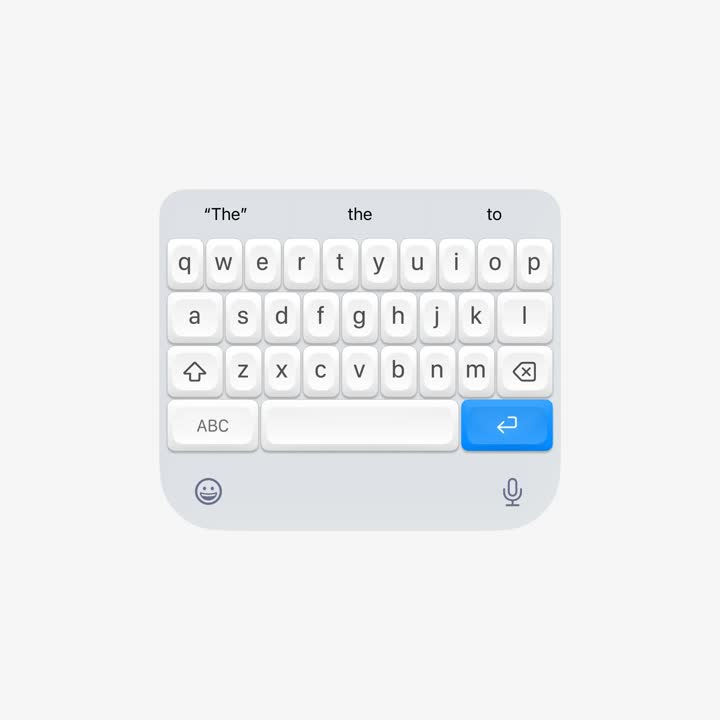
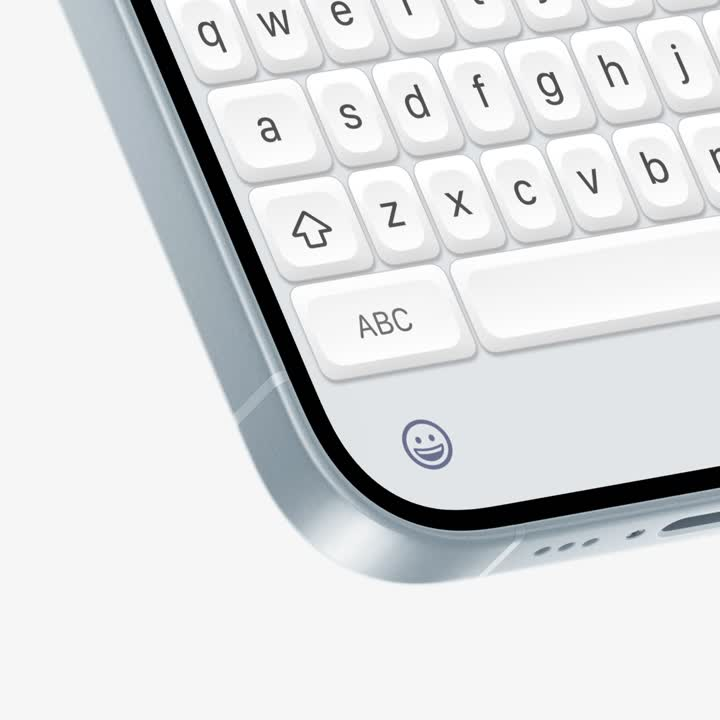

← All interactions
Mechanical keyboard for iphone
What it is
Mechanical keyboard for iPhone (illustration): a 3D-rendered iOS-style soft keyboard - prediction bar ('The', the, to), white sculpted keycaps with deep rounding and soft shadows, blue return key, emoji/mic row; close-up shows glossy bezel curvature. Keys depress with a mechanical-style travel when tapped.
Media


Frame-by-frame


media 1
Full keyboard render on pale backdrop: 3 key rows + modifiers, prediction bar above, emoji and mic glyphs in the bottom tray; keycaps are chunky with 8px radius, top-lit with soft AO in the gaps; blue return key glows slightly.
media 2
Macro shot of the bottom-left corner: chrome-grey device bezel curve, emoji key, ABC/shift keys - highlighting the glossy material, seam lines, and cap legends.
Mechanics
trigger
static renders (key press: translateY 2px + shadow tighten on tap)
elements
keyboard tray, keycaps, prediction bar
properties
key translateY + inner shadow on press
timing
press 80ms down, 120ms release
easing
ease-in down, spring release
loop
n/a
Build prompt
Recreate a mechanical-style iOS keyboard render. Tray: #D4D7DC rounded slab (28px corners) with a top prediction bar (3 words, center one bolder) and bottom tray holding emoji + mic line icons. Keys: white (#FBFBFC) chunky caps, 8px radius, styled like low-profile mechanical keycaps - top face slightly inset with 1px inner highlight, sides shaded with a soft vertical gradient (#FFF -> #E8EAEE), 6px gaps with ambient occlusion (soft dark gradient at each gap), and a floor shadow under the tray. Legends: lowercase SF-style 17px grey-800; return key in system blue with white glyph. Press interaction: cap translates down 2px over 80ms, its floor shadow shrinks 40%, legend dims 10%; release springs back in 120ms. Present one full-board view and one macro corner crop showing the bezel gloss.